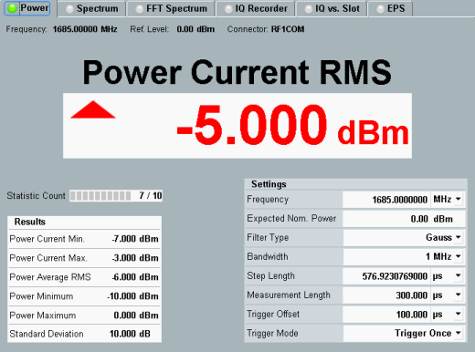

Single Step: Power Evaluation Mode
If the list mode is disabled and the evaluation mode "Power" is selected via the corresponding softkey, the measurement diagram displays the "Power Current RMS" value.

Single power step results: Power display mode
The "Results" area on the left presents the summary statistics of the power values for the current measurement interval and for all measurement intervals within the statistic count.
See also: "Statistical Results"
The "Settings" area on the right gives access to the basic settings of the power measurement